세미콜론
세미콜론🤝 2부. 협업 전략과 문화
💡 이 파트의 목표 : 왜 이렇게 쓰는지, 어떤 규칙으로 쓰는지 이해한다. 코드만 잘 짜는 게 아니라, 같이 일할 수 있는 개발자가 되는 파트입니다.
1. 왜 협업 전략이 필요한가
전략 없이 협업하면 생기는 일
- 아무나
main에 직접 push → 언제 뭐가 배포됐는지 모름
- 코드 리뷰 없이 바로 merge → 버그가 바로 사용자에게 노출
- 브랜치 이름이 제각각 → 뭐가 기능이고 뭐가 수정인지 모름
- 충돌 날 때마다 전부 중단 → 서로 눈치 보며 작업 못 함

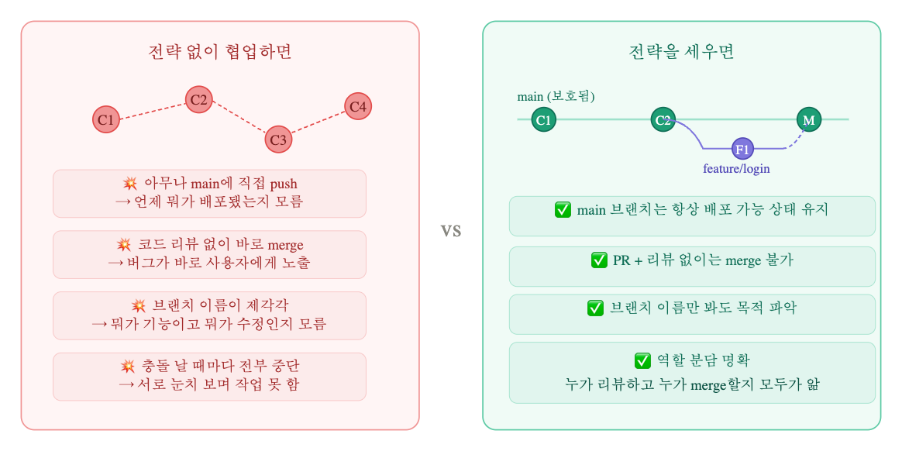
협업 전략의 핵심 3가지
- main은 항상 살아있어야 한다 — 언제든 배포 가능한 상태 유지.
- 혼자 merge하지 않는다 — 반드시 누군가 리뷰한다.
- 이름에 의도를 담는다 — 브랜치명, 커밋명만 봐도 뭔지 알아야 한다.
2. Git Flow vs GitHub Flow
브렌치 관리 전략 대표 2종

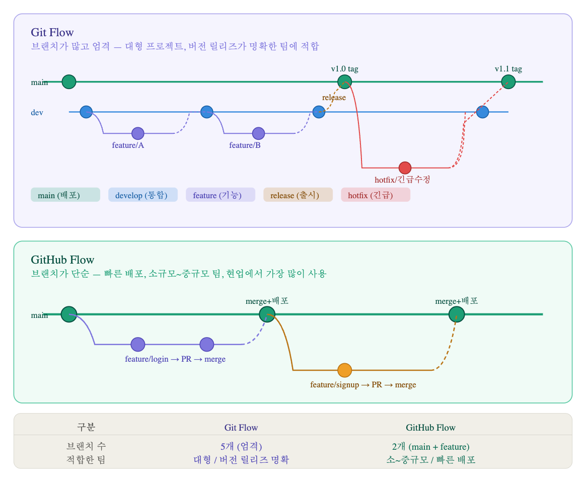
Git Flow — 브랜치 5종 세트
엄격하고 체계적입니다. 각 브랜치가 명확한 역할을 가집니다.
| 브랜치 | 역할 | 생성 기준 |
|---|---|---|
main | 실제 배포 버전. 태그로 버전 관리 | 항상 존재 |
develop | 다음 배포를 위한 통합 브랜치 | 항상 존재 |
feature/* | 기능 개발. develop에서 분기 | 기능마다 |
release/* | 배포 준비. develop → main | 출시 전 |
hotfix/* | 긴급 버그 수정. main에서 분기 | 장애 발생 시 |
# Git Flow 예시
git checkout develop
git checkout -b feature/login # develop 기준으로 분기
# ... 작업 ...
git checkout develop
git merge feature/login # develop으로 merge
git checkout -b release/1.0 # 출시 준비
git checkout main
git merge release/1.0 # 최종 배포
git tag v1.0GitHub Flow — 현업에서 가장 많이 사용
단순하고 빠릅니다. main + feature 브랜치 두 개로만 운영해요. 어플 쓰면 자주 update 되는 것들 있잖아요? 그렇게 배포가 자주 일어나는 팀에서 많이 사용합니다.
main에서feature/xxx브랜치 생성
- 작업 후 커밋 & 푸시
- PR 생성 → 리뷰 → Merge
- Merge 즉시 배포
# GitHub Flow 예시 — 이게 전부!
git switch -c feature/login # main 기준으로 분기
# ... 작업 ...
git push origin feature/login
# GitHub에서 PR 생성 → 리뷰 → Merge → 자동 배포💡 Git Flow든 GitHub Flow든 핵심 원리는 완전히 동일합니다.main을 보호하고→브랜치에서 작업하고→리뷰 후 merge한다.
전략이 달라도 이 뼈대는 절대 안 바뀌어요. 브랜치 개수와 이름 규칙만 다를 뿐입니다.
이번 실습은 GitHub Flow로 진행합니다. Git Flow는 팀 프로젝트 규모가 커졌을 때, 팀원이 많을때 등 필요에 의해 자연스럽게 도입하게 됩니다.
3. 팀장 vs 팀원 역할 분담
요약

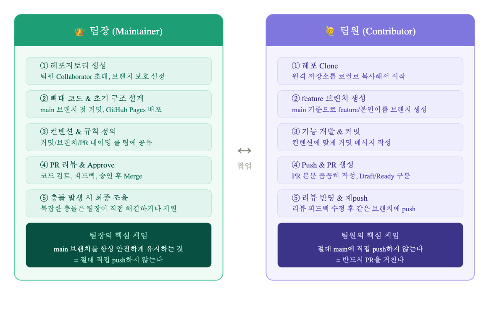
👑 팀장 (Maintainer)
| 단계 | 역할 |
|---|---|
| ① | 레포지토리 생성, 팀원 Collaborator 초대, 브랜치 보호 설정 |
| ② | 뼈대 코드 & 초기 구조 설계, main 브랜치 첫 커밋, GitHub Pages 배포 |
| ③ | 컨벤션 & 규칙 정의, 커밋/브랜치/PR 네이밍 룰 팀에 공유 |
| ④ | PR 리뷰 & Approve, 코드 검토, 피드백, 승인 후 Merge |
| ⑤ | 충돌 발생 시 최종 조율 |
🔑 팀장의 핵심 책임 : main 브랜치를 항상 안전하게 유지하는 것 = 절대 직접 push하지 않는다. 팀장도 예외없이 PR 생성 후 merge해야 규칙이 안 무너집니다.
🙋 팀원 (Contributor)
| 단계 | 역할 |
|---|---|
| ① | 레포 Clone, 원격 저장소를 로컬로 복사해서 시작 |
| ② | feature 브랜치 생성, main 기준으로 feature/본인이름 브랜치 생성 |
| ③ | 기능 개발 & 커밋, 컨벤션에 맞게 커밋 메시지 작성 |
| ④ | Push & PR 생성, PR 본문 꼼꼼히 작성, Draft/Ready 구분 |
| ⑤ | 리뷰 반영 & 재push, 리뷰 피드백 수정 후 같은 브랜치에 push |
🔑 팀원의 핵심 책임 : 절대 main에 직접 push하지 않는다 = 반드시 PR을 거친다
브랜치 보호 설정 (GitHub)
GitHub에서 이걸 강제하는 방법도 있어요. 레포 Settings → Branches → Branch protection rules에서main브랜치에Require pull request before merging을 켜두면 아무도 직접 push를 못 합니다.
# 팀장 — 초기 세팅 흐름
git init
git add .
git commit -m "init: 프로젝트 초기 구조 생성"
git remote add origin [GitHub 레포 URL]
git push -u origin main
# GitHub에서
# Settings → Collaborators → 팀원 이메일 초대
# Settings → Branches → Add rule → main → Require PR ✅
# 팀원 — 참여 시작 흐름
git clone [레포 URL]
cd [프로젝트명]
git switch -c feature/intro-김철수 # 본인 이름으로4. 커밋 메시지 컨벤션
전체 구조

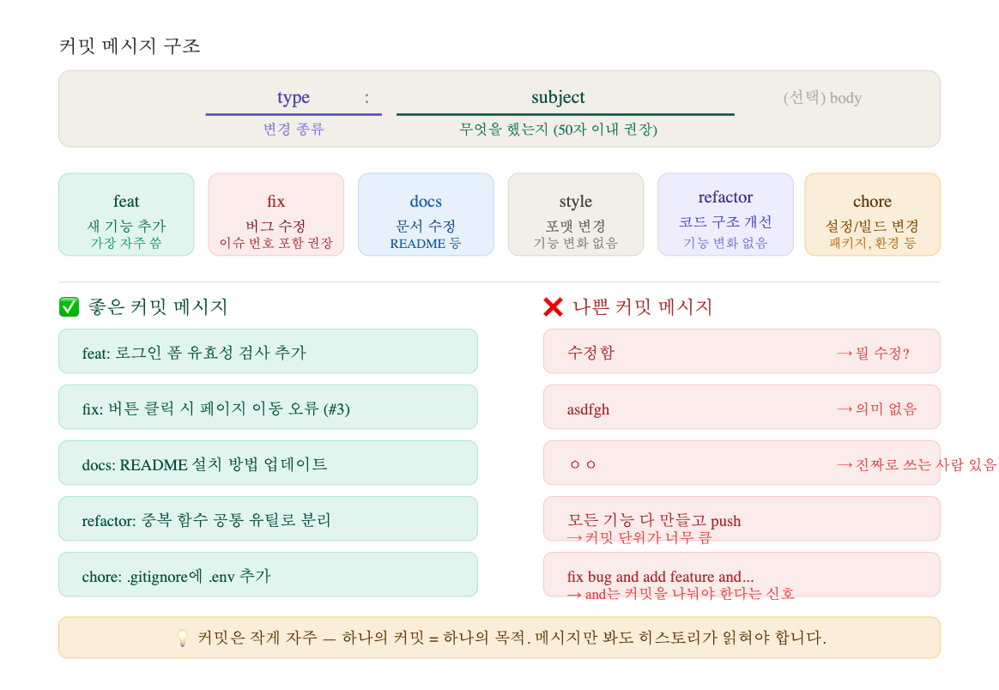
커밋 메시지는 미래의 나와 팀원에게 보내는 편지예요. 3개월 뒤에 "왜 이 코드가 바뀌었지?" 할 때 커밋 로그가 유일한 단서가 됩니다. 습관적 커밋은 중요합니다. 커밋&푸쉬 말고 커밋!!!!
커밋 메시지 구조
type: subject
(선택) body — 왜 이 변경을 했는지 설명타입 종류
| 타입 | 용도 | 예시 |
|---|---|---|
feat | 새 기능 추가 | feat: 로그인 폼 추가 |
fix | 버그 수정 | fix: 버튼 클릭 오류 수정 (#3) |
docs | 문서 수정 | docs: README 설치 방법 업데이트 |
style | 포맷 변경 (기능 변화 없음) | style: 들여쓰기 정리 |
refactor | 코드 구조 개선 (기능 변화 없음) | refactor: 중복 함수 공통 유틸로 분리 |
chore | 설정/빌드/환경 변경 | chore: .gitignore에 .env 추가 |
# ✅ 좋은 커밋
git commit -m "feat: 회원가입 이메일 중복 체크 추가"
git commit -m "fix: 로그인 토큰 만료 오류 수정 (#5)"
git commit -m "docs: README 설치 방법 업데이트"
# ✅ 본문까지 작성 (중요한 변경일 때)
git commit -m "fix: 로그인 토큰 만료 오류 수정 (#5)
토큰 만료 시간을 30분으로 고정하던 버그 수정.
환경변수 TOKEN_EXPIRE에서 동적으로 읽도록 변경."
# ❌ 이런 건 절대 금지
git commit -m "수정"
git commit -m "ㅇㅇ"
git commit -m "fix everything"
# 커밋 메시지 수정 (아직 push 전일 때만)
git commit --amend -m "feat: 로그인 폼 추가"
# 로그 확인
git log --oneline
git log --oneline --graph💡 커밋 메시지에 and가 들어간다면 커밋을 나눠야 한다는 신호예요.feat: 로그인 추가 and 회원가입 수정 → 커밋 두 개로 분리하세요.5. 커밋 vs 푸시 — 헷갈리는 두 개념
커밋과 푸시 개념 비교

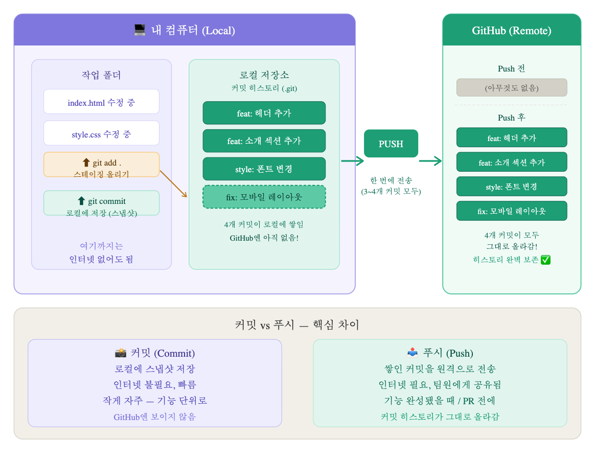
커밋과 푸시는 완전히 다른 행위입니다. 커밋은 내 컴퓨터 안에서만 일어나는 저장이고, 푸시는 그 저장된 내역을 인터넷 너머 GitHub에 올리는 전송이에요. 그리고 푸시할 때 커밋 히스토리가 통째로 올라갑니다. 4개 커밋을 쌓고 푸시하면 GitHub에 커밋 4개가 그대로 보여요.
| 구분 | 커밋 (Commit) | 푸시 (Push) |
|---|---|---|
| 위치 | 내 컴퓨터(로컬) | 인터넷(GitHub) |
| 인터넷 | 불필요 | 필요 |
| 공유 | 팀원에게 안 보임 | 팀원에게 보임 |
| 단위 | 작게 자주 | 의미 있는 단위로 |
| 시점 | 기능 단위 완성마다 | 하루 마무리 or PR 전 |
# 실제 작업 시나리오 — 커밋 4개, 푸시 1번
git add index.html
git commit -m "feat: 로그인 폼 HTML 구조 추가"
git add style.css
git commit -m "style: 로그인 폼 스타일 적용"
git add script.js
git commit -m "feat: 이메일 유효성 검사 추가"
git add index.html
git commit -m "fix: 로그인 버튼 텍스트 오타 수정"
# 여기까지 로컬에 커밋 4개 쌓임 — GitHub엔 아직 없음!
git log --oneline
# 기능 완성! 이제 한 번에 푸시 → 커밋 4개가 그대로 올라감
git push origin feature/login
# 아직 push 안 된 커밋 확인
git status
# "Your branch is ahead of 'origin/feature/login' by 4 commits."💡 커밋은 작게 자주, 푸시는 의미 있는 단위로 몰아서.
이 리듬을 익히면 히스토리가 훨씬 읽기 좋아지고 협업 시 소통의 큰 도움이 됩니다. 욕 먹을 일이 반으로 줄어요! 커밋은 그냥ctrl + s라고 생각하는 수준도 괜찮아요. 실제로 커밋 자주 안해서 많이 혼나거나 싸운다고 합니다. 자주 안하면 작업 상황을 타인이 직관적으로 파악하거나 추적하는데 어려움이 있거든요.
6. 브랜치 네이밍 컨벤션
전체 규칙 구조도

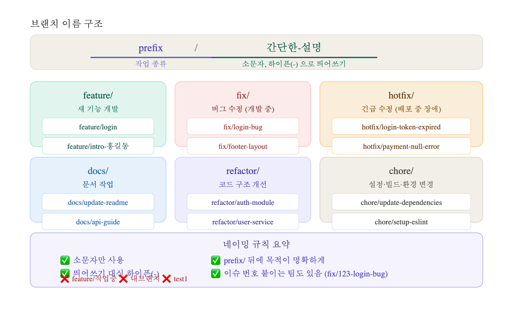
브랜치 이름 구조
prefix/간단한-설명소문자만 사용, 띄어쓰기 대신 하이픈(-)
| prefix | 용도 | 예시 |
|---|---|---|
feature/ | 새 기능 개발 | feature/login, feature/intro-홍길동 |
fix/ | 버그 수정 (개발 중) | fix/login-bug, fix/footer-layout |
hotfix/ | 긴급 수정 (배포 중 장애) | hotfix/login-token-expired |
docs/ | 문서 작업 | docs/update-readme |
refactor/ | 코드 구조 개선 | refactor/auth-module |
chore/ | 설정/빌드/환경 변경 | chore/setup-eslint |
# ✅ 좋은 브랜치 네이밍
git switch -c feature/login
git switch -c feature/intro-홍길동 # 이번 실습에서 쓸 형식
git switch -c fix/5-login-bug # 이슈번호 포함 권장
git switch -c hotfix/login-token-expired
# ❌ 이런 건 금지
git switch -c 내브랜치
git switch -c test1
git switch -c 작업중💡 브랜치 이름은 내가 PR 올렸을 때 팀장이 한 눈에 뭔지 알 수 있어야 해요. feature/intro-홍길동 만 봐도 "홍길동이 자기소개 섹션 만드는 중" 이 바로 읽혀야 합니다.7. PR 컨벤션 & 템플릿
전체 규칙 구조도

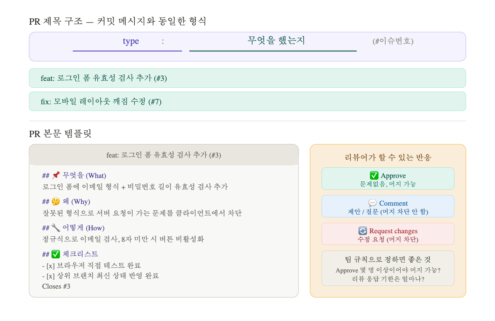
PR 제목 구조
type: 무엇을 했는지 (#이슈번호)예시: feat: 로그인 폼 유효성 검사 추가 (#3)
PR 본문 템플릿 예시
아래 파일을 레포에 추가하면 PR 생성 시 자동으로 채워져요. github에서 PR 보낼 때 작성해도 됩니다. 물론 Markdown으로. 근데 IDE에서 개발 중간중간 작성하는게 훨씬 정확하고 편하겠죠? 그렇게 하는게 템플릿 만들어두고 돌려 쓰기도 좋구요.
<!-- .github/PULL_REQUEST_TEMPLATE.md -->
## 📌 무엇을 (What)
<!-- 이 PR에서 무엇을 변경했는지 -->
## 🤔 왜 (Why)
<!-- 이 변경이 필요한 이유 -->
## 🔧 어떻게 (How)
<!-- 구현 방법 간략 설명 -->
## 📸 스크린샷 (UI 변경 시)
<!-- 변경 전 / 변경 후 첨부 -->
## ✅ 체크리스트
- [ ] 브라우저에서 직접 테스트했나요?
- [ ] 상위 브랜치 최신 상태를 반영했나요?
- [ ] PR 제목이 컨벤션에 맞나요?
Closes #Draft PR vs Ready for Review (Final PR)
| 구분 | Draft PR | Ready for Review Final PR |
|---|---|---|
| 상태 | 🚧 작업 중 | ✅ 리뷰 요청 |
| Merge | 불가 (버튼 비활성) | 가능 |
| 목적 | 작업 영역 선점, 진행 공유 | 코드 검토 요청 |
| 전환 | Ready for Review 버튼 클릭 | Merge 진행 |
# Draft 상태에서 계속 작업하며 커밋 & 푸시
git commit -m "wip: 로그인 폼 UI 작업 중"
git push origin feature/login # Draft PR에 자동 반영
# 작업 완료 → GitHub에서 "Ready for Review" 버튼 클릭PR 보내기 전 체크리스트
- 상위 브랜치 최신 상태 반영했는가? (
git merge dev)
- 내 코드 직접 다시 읽어봤는가? (Self-review)
- PR 제목이 컨벤션에 맞는가?
- PR 본문에 무엇을/왜/어떻게 작성했는가?
- 관련 Issue 번호 연결했는가? (
Closes #5)
코드 리뷰 반응 종류
| 반응 | 의미 |
|---|---|
| ✅ Approve | 문제없음, 머지 가능 |
| 💬 Comment | 제안/질문 (머지 차단 안 함) |
| 🔄 Request changes | 수정 요청 (머지 차단) |
Reviewer 재요청 방법
Request changes 를 받았다고 당황하지 마세요. 수정하고 같은 브랜치에 push하면 PR에 자동 반영됩니다.
# ① 리뷰어가 Request changes 남김
# ② 해당 부분 수정 후 커밋
git add .
git commit -m "fix: 리뷰 반영 - 이메일 유효성 검사 조건 수정"
# ③ 같은 브랜치에 push (PR에 자동 반영됨, 새 PR 안 만들어도 됨)
git push origin feature/login
# ④ GitHub PR 페이지에서 Reviewer 옆 🔄 버튼 클릭
# = "수정했어요, 다시 봐주세요" 신호
# 리뷰어에게 재검토 알림이 전송됨💡 리뷰 반영 후 새 PR을 만들 필요가 없어요. 같은 브랜치에 push하면 기존 PR에 커밋이 추가되고, 🔄 버튼으로 재요청하면 됩니다.
8. Issue 컨벤션 & 라벨
전체 구조도

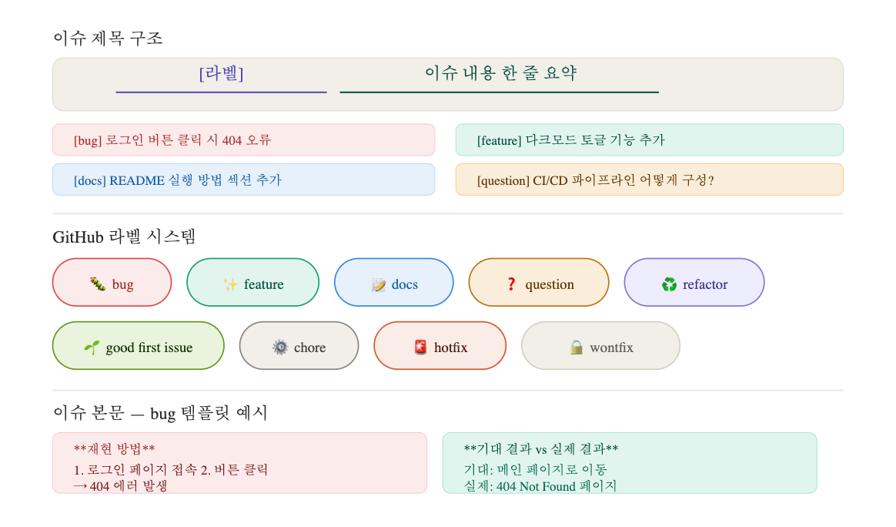
이슈 제목 구조
[라벨] 이슈 내용 한 줄 요약예시:
[bug] 로그인 버튼 클릭 시 404 오류
[feature] 다크모드 토글 기능 추가
[docs] README 실행 방법 섹션 추가
라벨 종류
| 라벨 | 용도 |
|---|---|
bug | 버그 발생 보고. 재현 방법, 기대 결과, 실제 결과 기술 |
feature | 새 기능 요청 또는 개발 예정 작업 |
docs | README, 주석, 위키 등 문서 수정 |
question | 기술적 질문이나 방향 논의 |
refactor | 기능 변경 없이 코드 구조 개선 |
good first issue | 처음 기여자에게 추천. 오픈소스에서 많이 사용 |
hotfix | 긴급 수정 필요 |
wontfix | 수정하지 않기로 결정 |
이슈 → 브랜치 → PR → Merge 흐름

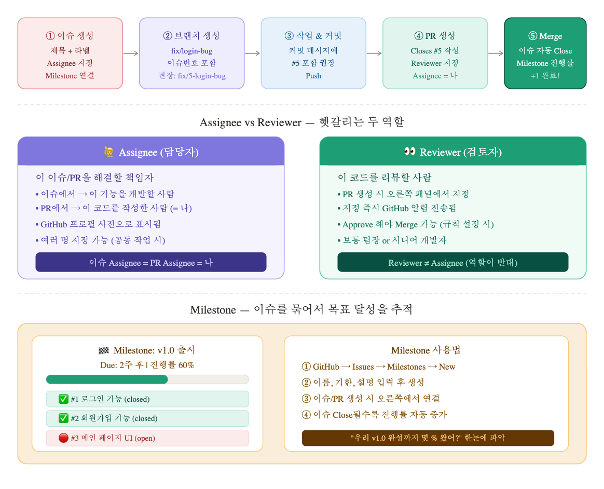
이슈는 PR이 존재하는 동안 계속 Open 상태입니다.

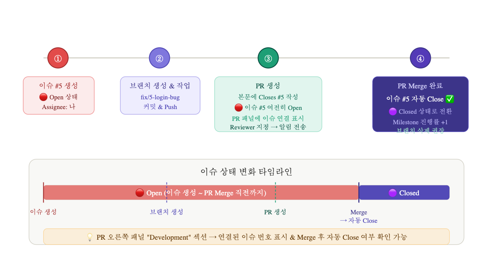
PR 페이지 오른쪽 "Development" 패널에 연결된 이슈가 표시되고,
Merge 버튼을 누르는 순간 자동으로 Close됩니다.
이슈 생성 (Open) → 브랜치 생성 & 작업 → PR 생성 (이슈 여전히 Open)
→ 코드 리뷰 → PR Merge → 이슈 자동 Close ✅Assignee vs Reviewer
| 구분 | Assignee (담당자) | Reviewer (검토자) |
|---|---|---|
| 역할 | 이 이슈/PR을 해결할 책임자 | 이 코드를 리뷰할 사람 |
| PR에서 | 코드를 작성한 나 | 팀장 or 동료 |
| 알림 | 이슈 할당 시 | PR 지정 즉시 알림 |
| 머지 | — | Approve 해야 Merge 가능 (규칙 설정 시) |
이슈 템플릿 파일 등록
.github/ISSUE_TEMPLATE/ 폴더에 파일을 추가하면 이슈 생성 시 자동으로 템플릿이 로드됩니다.
mkdir -p .github/ISSUE_TEMPLATE<!-- .github/ISSUE_TEMPLATE/bug_report.md -->
---
name: 버그 리포트
about: 버그를 발견했을 때
labels: bug
---
## 🐛 버그 설명
## 재현 방법
1.
2.
## 기대 결과
## 실제 결과
## 환경
- 브라우저:
- OS:# 이슈 #5 "로그인 버그" 가 나에게 할당된 경우
# ① 이슈 번호를 브랜치 이름에 포함
git switch -c fix/5-login-bug
# ② 커밋 시 이슈 번호 언급
git commit -m "fix: 로그인 토큰 만료 오류 수정 (#5)"
# ③ Push 후 PR 생성
git push origin fix/5-login-bug
# ④ PR 본문 키워드 — Merge 시 이슈 자동 Close
# Closes #5 ← 이슈 완전 해결 (가장 많이 씀)
# Fixes #5 ← 버그 수정
# Resolves #5 ← 일반적 해결
# Related to #5 ← Close 안 됨! 관련만 표시
# Part of #5 ← Close 안 됨! 부분 작업 표시
# ⑤ PR 생성 후 오른쪽 패널 채우기
# Reviewers → 팀장 지정 (즉시 알림 전송)
# Assignees → 나 자신
# Labels → fix
# Milestone → v1.0 등 Milestone & Projects
# Milestone 생성
# GitHub → Issues 탭 → Milestones → New milestone
# 제목: v1.0 출시 / 기한: 2025-05-01
# 이슈/PR 생성 시 오른쪽 Milestone 패널에서 연결
# → 이슈 Close될수록 진행률 자동 증가
# GitHub Projects (칸반 보드)
# GitHub → Projects → New project → Board 템플릿
# Todo / In Progress / Done 컬럼으로 이슈 관리💡 PR 생성 시 오른쪽 패널 4가지를 반드시 채우세요.Reviewers/Assignees/Labels/Milestone이 네 가지만 잘 채워도 팀 전체가 진행 상황을 실시간으로 파악할 수 있어요.
9. README.md & .gitignore
전체 구조도

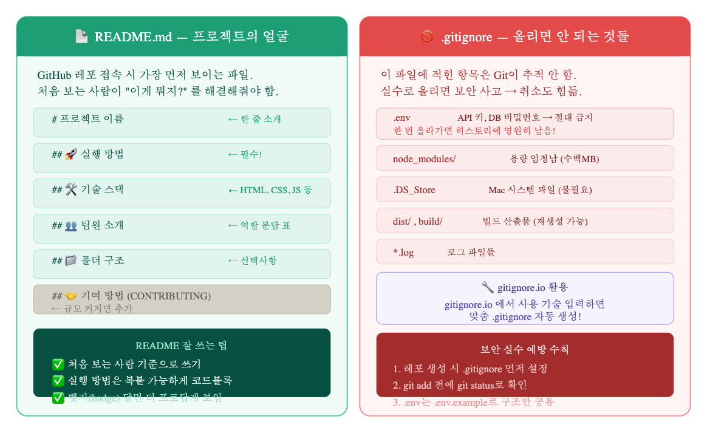
README.md — 프로젝트의 얼굴
GitHub 레포 접속 시 가장 먼저 보이는 파일.
처음 보는 사람이 "이게 뭐지?" 를 해결해줘야 합니다.
| 섹션 | 중요도 | 내용 |
|---|---|---|
# 프로젝트 이름 | 필수 | 한 줄 소개 |
## 🚀 실행 방법 | 필수 | 복붙 가능한 코드블록 |
## 🛠 기술 스택 | 권장 | HTML, CSS, JS 등 |
## 👥 팀원 소개 | 권장 | 역할 분담 표 |
## 📁 폴더 구조 | 선택 | 디렉토리 설명 |
## 🤝 기여 방법 | 선택 | 규모 커지면 추가 |
<!-- README 뱃지 예시 — 복붙해서 바로 사용 가능 -->

🚫 .gitignore — 올리면 안 되는 것들
이 파일에 적힌 항목은 Git이 추적하지 않습니다.
실수로 올리면 보안 사고 → 취소도 매우 힘듭니다.
# .gitignore 예시 (웹 프로젝트 기준)
node_modules/
.env
.env.local
.DS_Store
dist/
build/
*.log
.vscode/settings.json🔧 gitignore.io 자동 생성 방법
# .env는 직접 올리지 말고 구조만 공유
# .env.example 파일을 만들어서 어떤 키가 필요한지만 알려줌
DATABASE_URL= # ← 값은 비워두고
JWT_SECRET= # ← 키 이름만 알려주기
API_KEY=⚠️ .gitignore 는 보안이 필요한 프로젝트인경우 레포 만들 때 제일 먼저 설정하는게 좋습니다. 아니면 ignore 파일 만들어 두고 git init하시거나. 저는 보통 기본 폴더 구조와 ignore 등 기본적인 파일 / 폴더 생성 해두고 first commit 하면서 git init 하고 레포 연결합니다.
나중에 실수로 올린 파일은 히스토리에서 지우는 게 매우 번거롭고, 이미 GitHub에 노출된 API 키는 즉시 폐기해야 합니다.
보안 실수 예방 수칙
1. 레포 생성 시 .gitignore 먼저 설정
2. git add 전에 git status로 확인
3. .env는 .env.example로 구조만 공유
✅ 2부 완료!
전략과 문화를 익혔으니 이제 3부에서 직접 실습해봅니다.